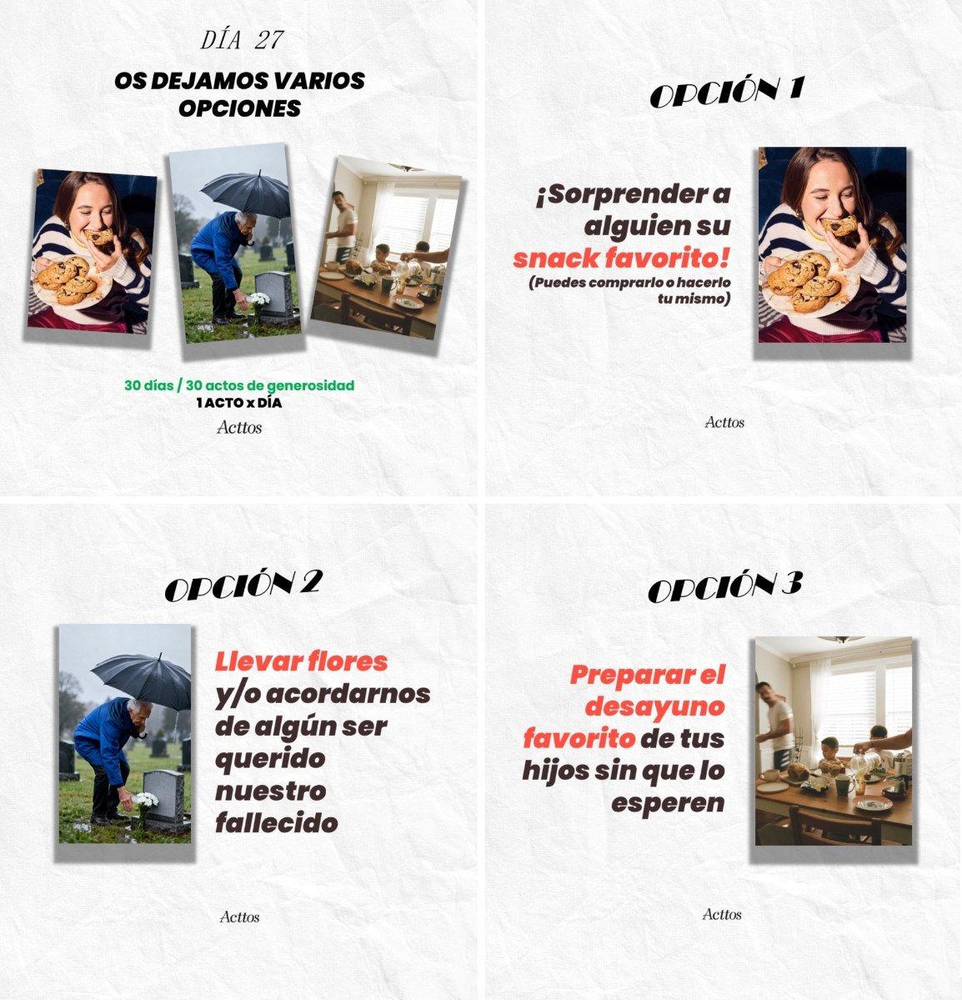
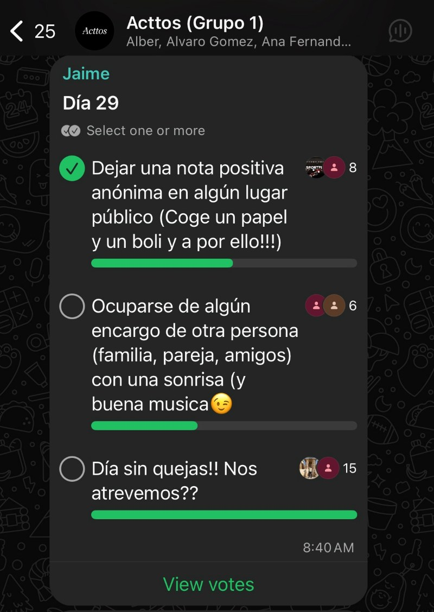
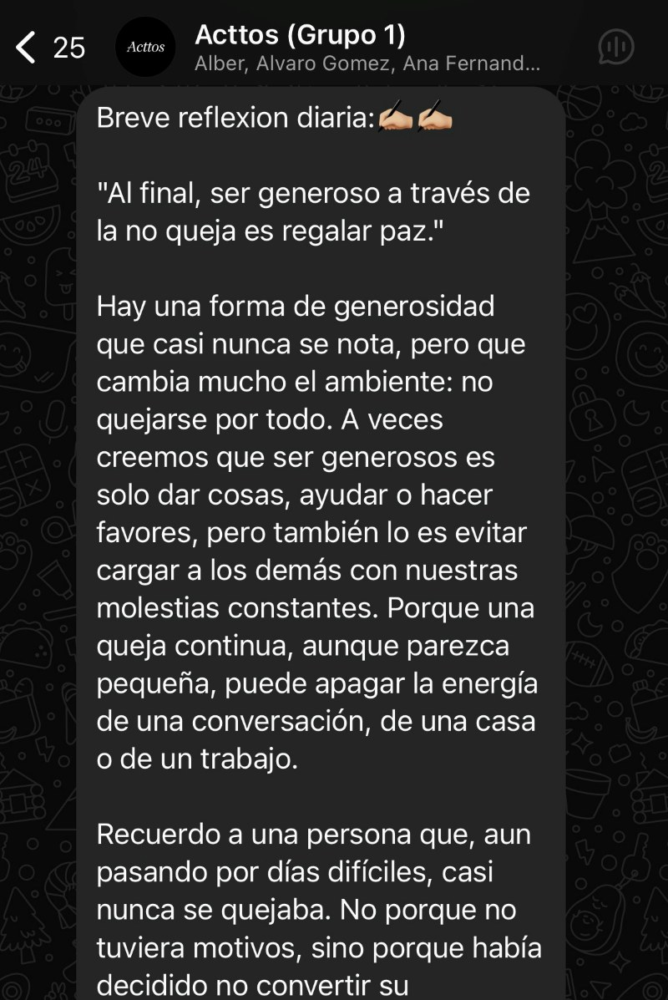

Más de 602 acttos realizados, más de 80 personas que han participado y más de 74 llamadas a seres queridos.
+602 Acttos realizados+80 Personas que han participado+74 Llamadas a seres queridos+602 Acttos realizados+80 Personas que han participado+74 Llamadas a seres queridos
+602 Acttos realizados+80 Personas que han participado+74 Llamadas a seres queridos+602 Acttos realizados+80 Personas que han participado+74 Llamadas a seres queridos
Cambiemos el mundo, un actto al día.
“De todas las variedades de virtud, la generosidad es la más estimada.” — Aristóteles
La generosidad está dentro de todos nosotros.
Pero seamos honestos: tenerla y practicarla no siempre van de la mano.
A veces tenemos prisa. O estamos cansados. O simplemente estamos demasiado pendientes de lo nuestro como para mirar un poco más allá.
Y ahí empieza Acttos.
Soy Jaime, y he creado este pequeño proyecto con una idea muy sencilla:
Hacer el bien no debería ser algo extraordinario. Debería formar parte de nuestro día a día.
Un mensaje. Una ayuda. Un “¿cómo estás?” de verdad. Un poco de nuestro tiempo. Un pequeño gesto.
Pequeños acttos capaces de cambiar el día de alguien.
Porque la generosidad no solo transforma la vida de quien la recibe. También transforma la de quien la practica.
Cuando damos de verdad —sin esperar nada a cambio— conectamos con algo muy humano: cuidar, compartir, ayudar y hacer que los demás estén un poquito mejor.
Y quizá ahí está una de las claves de una vida más feliz y con más sentido.
Pero hay algo importante:
La generosidad no se puede fingir.
No se trata de hacer un actto para sentirnos buenas personas, conseguir algo a cambio o tacharlo de nuestra lista.
Se trata de convertir poco a poco esos pequeños gestos en una forma real de vivir.
Por eso existe Acttos.
Acttos Challenge
30 días. 30 acttos.
Un reto para salir durante 30 días de nuestra rutina y mirar un poco más hacia el de al lado.
Cada día tendrás un pequeño desafío de generosidad.
Nada imposible. Nada extraordinario.
Solo un actto.
Una pequeña acción capaz de hacer que el día de otra persona sea un poco mejor.
Y, durante 30 días, vamos a intentar convertir esos pequeños gestos en algo más que un reto: un hábito.
¿Cómo funciona?
Acepta el reto contigo mismo, con tu pareja, tu familia, tus amigos… o con todos ellos.
Solo tienes que hacer tres cosas:
1. Participa en el reto
Rellena el breve formulario que encontrarás aquí abajo.
¡Gracias, !
Ya estás dentro del Acttos Challenge. Muy pronto te añadiremos a tu grupo de WhatsApp.
02. Crea tu comunidad
Crearemos un grupo de WhatsApp único para ti y las personas con las que quieras compartir el reto.
Puedes invitar a quien quieras. Cuantos más, mejor. Porque la generosidad también se contagia.
03. Durante 30 días, acttúa
Cada día recibirás tres mensajes en el grupo
1

♡Entre 1 y 3 acttos para realizar. La idea es sencilla: elige uno y hazlo.
2

♡Una pequeña encuesta para indicar que actto has hecho o planeas hacer
3

♡Una breve reflexión sobre la generosidad y sobre cómo ese pequeño actto puede impactar en alguien.
No buscamos hacerlo perfecto.
Buscamos hacerlo de verdad.
Porque al final, este reto no va de acumular 30 días, 30 encuestas o 30 casillas marcadas.
Va de 30 días aprendiendo a mirar un poco más al de enfrente.
Y recuerda:
CADA ACTTO NO ES POR TI.
Es por la sonrisa, el bienestar o el día un poquito mejor de la persona que tienes delante.
Y quién sabe.
Quizá después de 30 días, esos 30 acttos ya no sean un reto.